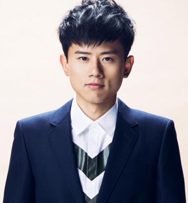

李易峰，1987年5月4日出生于四川成都，中国内地男演员、流行乐歌手、影视制片人，毕业于四川师范大学电影电视学院。2007年，参加东方卫视选秀娱乐节目《加油！好男儿》的比赛，获得全国总决赛第八名，从而正式出道；同年，发行首张EP《四叶草》。2009年，发行首张个人专辑《小先生》。
戚薇，1984年10月26日出生于四川省成都市武侯区，中国内地女演员、歌手，毕业于浙江传媒学院录音艺术专业。2006年因参加选秀节目《我型我秀》而正式出道，同年与袁成杰组成“男才女貌”组合，并凭借歌曲《外滩十八号》在歌坛获得关注。2010年因参演古装剧《美人心计》而被观众所熟知。2011年主演都市情感剧《夏家三千金》；同年签约海蝶音乐，并发行首张个人EP《如果爱忘了》。2012年在都市剧《世界上另 .

张杰，1982年12月20日出生于四川成都，毕业于四川师范大学，内地流行男歌手，音乐厂牌“行星文化”创始人2004年获我型我秀全国总冠军出道。2007年参加快乐男声；推出EP《最美的太阳》。2008年推出专辑《明天过后》；担任北京奥运会火炬手。2010年推出专辑《这，就是爱》；获韩国MAMA颁奖礼亚洲之星奖。2012年在人民大会堂开启巡演；作品《风华正茂》获湖南省五个一工程奖。2013年首登央视 ... >>>